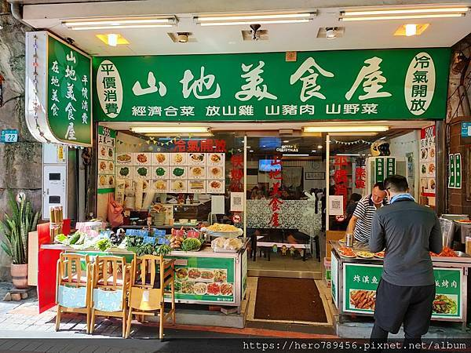
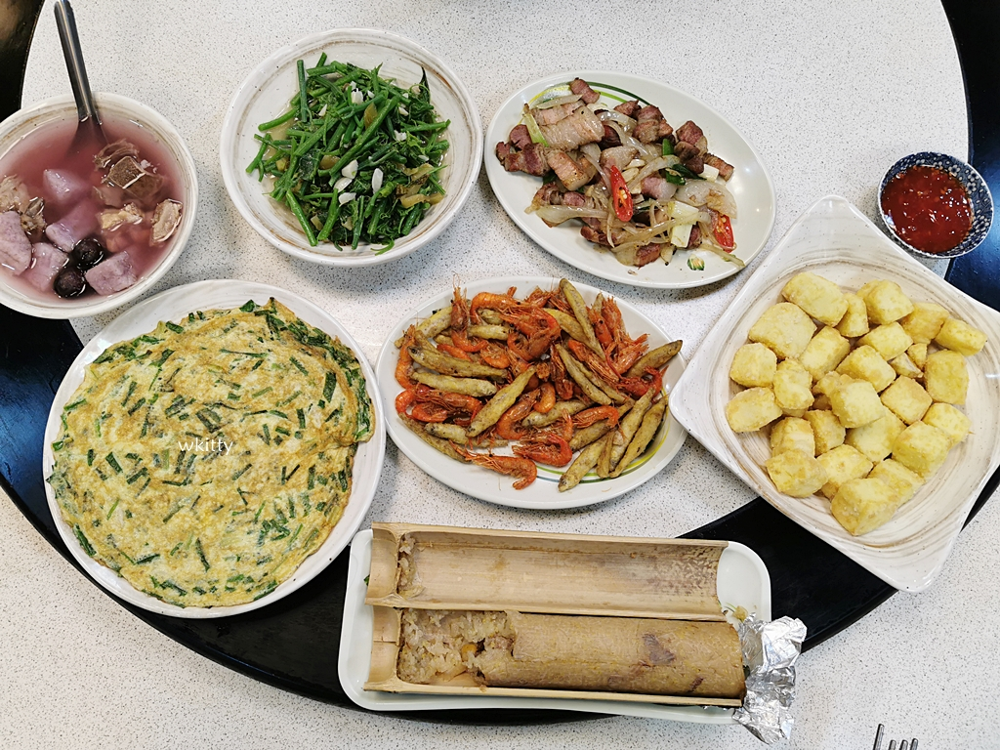

山地美食屋
google評價：4.4★
店家資訊
地址：新北市烏來區烏來街20號
營業時間：早上11:00到晚上6:00
店家電話：02-2661-7556

推薦菜單
福山放山雞250元/500元 石板烤肉150元/280元
炒山豬肉150元/280元 滷福山桂竹筍100元/150元
番茄炒蛋150元/250元 檳榔花160元300元 炒山蘇150元/250元
麻婆豆腐150元/250元 炒紅菜80元/120元 空心菜80元/120元
香菇雞湯100元 山藥排骨湯70元 蘿蔔排骨湯50元
顧客評論
這家是google map裡面評論最多，平價也最高的烏來老街美食，因為特色料理選擇多，價格大多落在100左右，不像觀光區的物價。其中推薦的有福山放山雞，肉質彈牙的放山雞而且雞腿的部分最美味，再來是石板烤肉，烏來是泰雅族聚落的關係所以有石板烤肉，山豬肉很香，肥肉油質感比較重，很適合配啤酒。